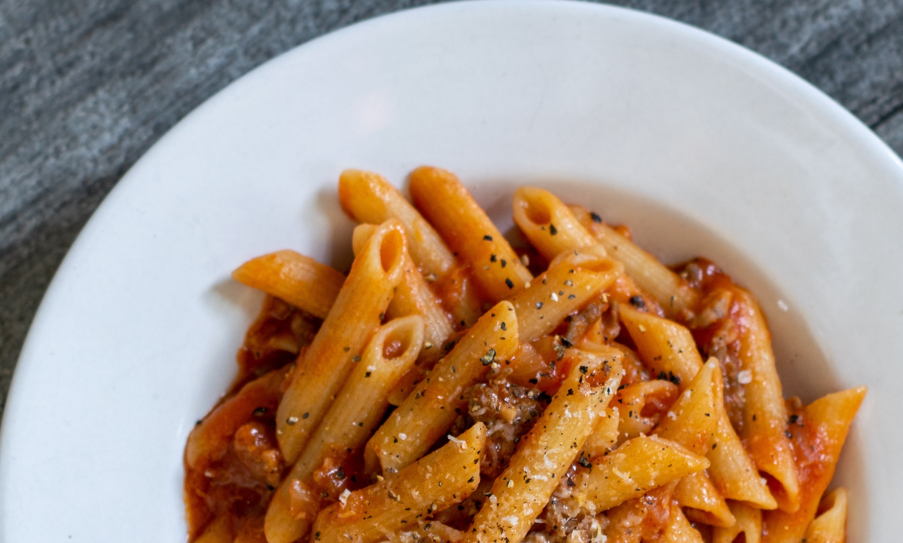

Pasta

Description
Discover mouthwatering recipes and indulge in homemade delights with our collection of simple and flavorful dishes, including a delectable pasta recipe with rich tomato sauce. Here's a simple pasta recipe for you to try:
Ingredients
- 8 ounces (225g) pasta of your choice
- 2 tablespoons olive oil
- 1 small onion, finely chopped
- 2 cloves of garlic, minced
- 1 can (14 ounces/400g) crushed tomatoes
- 1 teaspoon dried basil
- 1 teaspoon dried oregano
- 1/2 teaspoon salt (or to taste)
- 1/4 teaspoon black pepper (or to taste)
- Grated Parmesan cheese, for serving
- Fresh basil or parsley, chopped (for garnish)
Steps
- Cook the pasta according to the package instructions until al dente. Drain and set aside.
- In a large skillet, heat the olive oil over medium heat. Add the chopped onion and minced garlic, and sauté until they are softened and fragrant.
- Add the crushed tomatoes, dried basil, dried oregano, salt, and black pepper to the skillet. Stir well to combine.
- Reduce the heat to low and let the sauce simmer for about 15-20 minutes to allow the flavors to meld together.
- Taste the sauce and adjust the seasonings according to your preference.
- Add the cooked pasta to the skillet and toss it with the tomato sauce until well coated.
- Remove from heat and transfer the pasta to serving plates or bowls.
- Sprinkle grated Parmesan cheese on top of each portion.
- Garnish with freshly chopped basil or parsley.
- Serve immediately and enjoy!